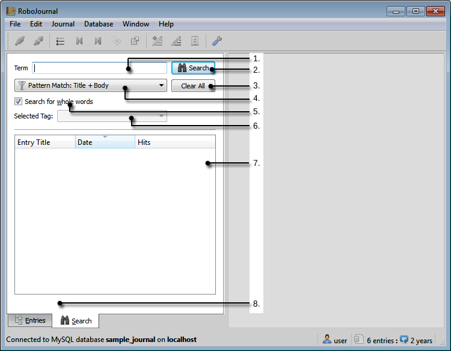
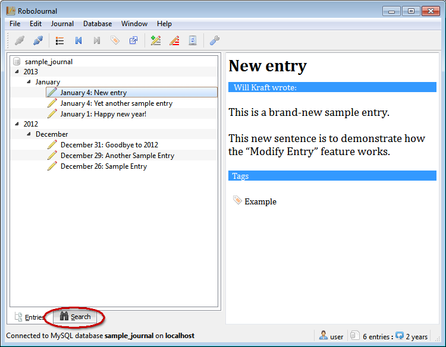
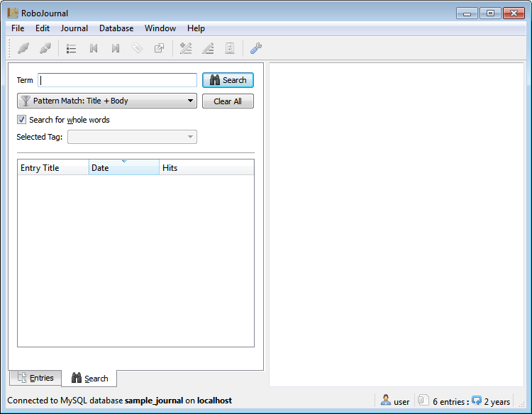
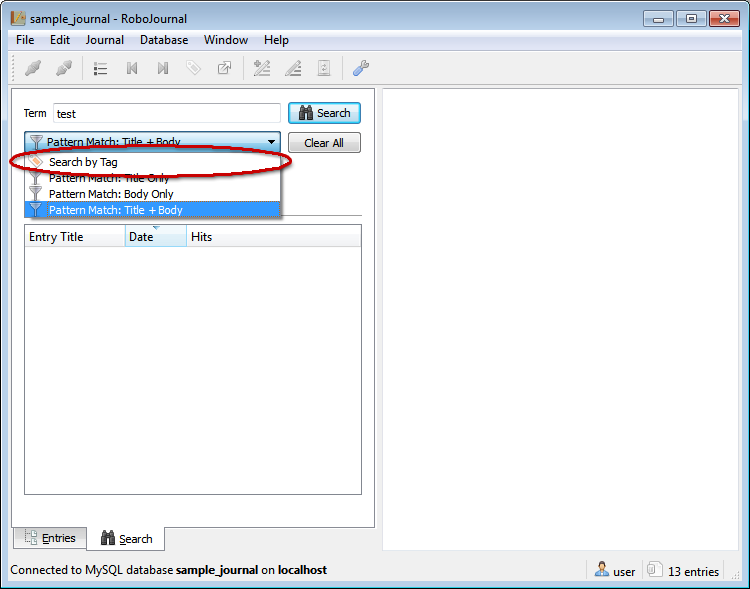
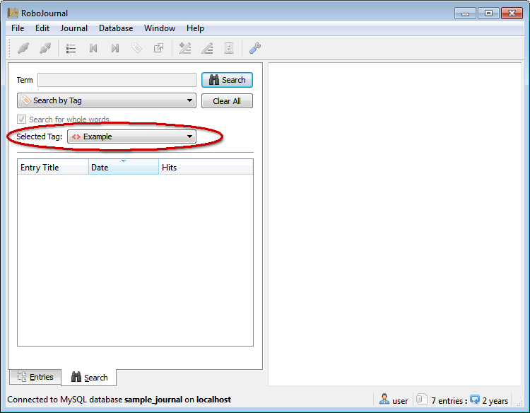
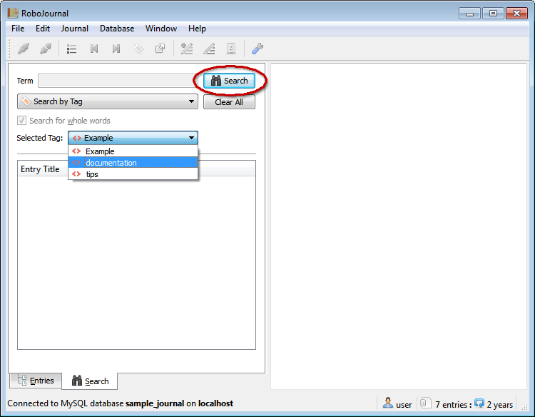
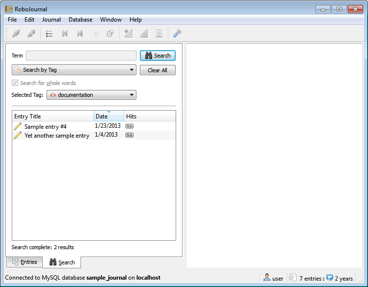
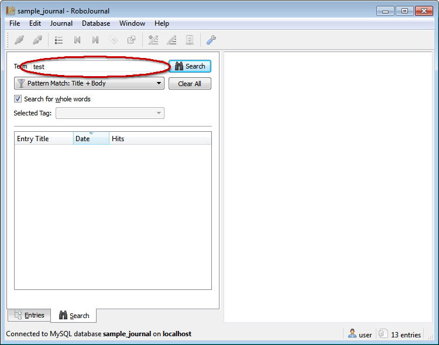
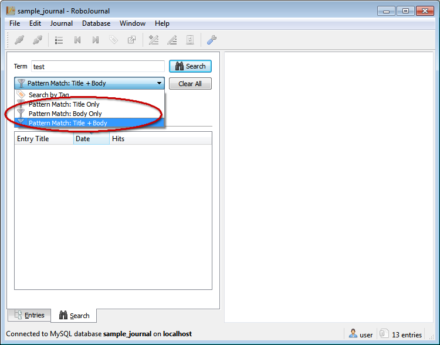
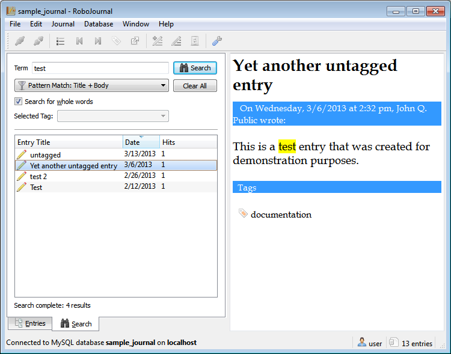

for version 0.5
Using the Search Function
Contents
Search Overview
RoboJournal provides the ability to search the current journal for individual keywords or tags (starting in version 0.4 and later). This feature is extremely beneficial for locating specific data in larger journals because the search function deliberately ignores the entry range value if one has been set. This allows you to locate and read old entries that may be outside the current visible range on the Chronological Entry List.
RoboJournal's search mode is designed to be read-only; all changes to the journal must be done from the Entries tab in order to eliminate the possibility of write conflicts since the Entries and Search tabs keep track of their current entries separately. Because of this, all toolbar buttons (except RoboJournal Preferences) are locked while Search Mode is active. Without this protection, it would be theoretically possible for two different versions of the same entry to exist simultaneously in memory and cause data corruption.
RoboJoural supports two distinct search methods. Each method has its own set of advantages/disadvantages and is therefore suited for different situations.
Pattern Match
Pattern matching searches the current journal for all instances of a literal search term. Entries containing one or more matches (hits) are displayed in the search results list. Pattern matching allows the greatest level of precision but is generally unsuitable for broad/category-based queries because the pattern is applied without any regard for context. All occurrences of the pattern are highlighted for improved visibility if the highlight option is enabled in RoboJournal Preferences.
Pattern matching searches for whole words by default. This means that a hit is only counted if it is an individual word preceded by whitespace (or is the first word in a sentence) and followed by whitespace or some form of punctuation. Partial-word matches are defined as being a search term contained within a larger word; for instance, using "term" as a search pattern would match determination in a partial word search. Partial-word matches are only permitted if you uncheck the Search for whole words checkbox before running the search.
Pattern Match Filters
RoboJournal offers three different types of pattern matching. RoboJournal allows you to select the type of pattern match to use before each search. The type you should use depends widely on your needs and how much you want to limit the search.
| Pattern Match: Title Only | This filters the pattern search to entry titles and nothing else. Title-based searching is ideal for situations where you know of the existence of several similarly-titled entries in a series (i.e. "Log Entry #1; Log Entry #2, etc.) and are only interested in finding entries from that series; searching for "Log Entry" would allow you to find the entire series very quickly, especially if it is spread out over a period of months or years. |
| Pattern Match: Body Only | This option filters the pattern search to the body text. This mode should be used in situations where you want to locate a specific word or phrase but are unsure of where it can be located. This is very similar to the Body + Title search method but is slightly more conservative. |
| Pattern Match: Title + Body | This is the default pattern match "filter". In actuality, the word "filter" is misleading in this context because this option does not filter the results at all; it searches each entry's title and body for any and all occurrences of the search term. It is by far the most comprehensive search method and is ideal for situations where you want the largest possible number of results. The only drawback to this method is that it may be too comprehensive by returning a large number of false positives along with the useful results. |
Highlighting
RoboJournal (as of version 0.4) includes the ability to highlight all occurrences of a search term wherever they appear. This feature is meant to make all instances of the search term easier to find in long documents (much like traditional highlighter pens are used to bring the reader's focus to a specific area of text). The background colors used for the highlighter function are user-configurable.
Tag Search
RoboJournal's tagging system allows you to group entries into categories. This allows for context-based searches (since several items with the same tag are more likely to be of a similar topic) but lacks the precision control found in pattern matching. Searching by tag also disables highlighting and the number of hits per result because there is no specific search term to highlight or term occurrences to count.
When you search by tag, all entries marked with the selected tag are displayed in the results list.
Search Interface Overview
The rows in the following table correspond to the numbered items in Figure 1. The following table provides information about each element in the RoboJournal search interface: Figure 1: RoboJournal's Search Interface is clearly indicated (and numbered by item) while the rest of the window has been artificially darkened to better differentiate the search area.
| 1. Term | The Term field accepts the literal pattern (or term) you wish to search for. This field is locked while in tag search mode. |
| 2. Search Button | The Search button initiates the next search using the current tag or pattern. |
| 3. Clear All Button | The Clear All button completely resets the search interface by clearing the Search Results and Term field contents. |
| 4. Search Mode (unlabeled) | This option allows you to choose which type of search
RoboJournal should use from a drop-down list. RoboJournal will run a
pattern match search (with a scope of title and body) by default but
you can limit the search to only the body or title of entries if
desired.
This field is officially called "Search Mode" even though it is not marked as such in the actual interface. |
| 5. Search for whole words | If checked, this field causes the search function to only count whole-word occurrences of the current search term. The Search for whole words field is locked while RoboJournal is in tag search mode. |
| 6. Selected Tag | While in search mode, this drop-down list contains all tags in the current journal. Selecting a tag from the list causes the next search operation to find all entries marked with that specific tag. The Selected Tag field is locked (and blank) while RoboJournal is in pattern search mode. |
| 7. Search Results (unlabeled) | All search results are displayed in the unlabeled
Search Results area (which consists of three columns). The
Entry Title column lists the title of each entry in
the results, Date displays the date on which each
entry in the results was made, and the Hits column
shows how many occurrences of the current search term are in each
entry.
This area is officially referred to as "Search Results" even though it is not labeled as such in the actual interface. |
| 8. Search Result Count (unlabeled) | This field merely displays the number of results for the current search (yet accepts no direct user interaction). The Search Result Count field displays no data and is invisible (aside from the space that it occupies) if no search has been performed yet or the previous results have been cleared. |
You can sort the search results by any of the columns in ascending or descending order; click a column header to toggle the sort algorithm between ascending/descending. Sorting by Entry Title arranges the entries in alphabetical order/reverse alphabetical order. Sorting by Hits arranges entries in numerical order/reverse numerical order depending on the number of times the search term is detected in each entry. On the other hand, sorting by Date places the entries in chronological/reverse chronological order.
Conducting Searches
All search-related activity is conducted through the Search tab in the RoboJournal main window (the Search tab is unlocked during an active connection but is inaccessible while RoboJournal is in Default State). The following procedure prepares RoboJournal for the next search operation:
Accessing the Search Interface
- Establish a new connection if you have not already done so.
- Click the Search tab (indicated by the red oval in Figure 2).Figure 2: The Search tab is unlocked once a connection has been established.
- The search interface is displayed:Figure 3: RoboJournal is now in Search Mode.
- Consult the "Search by Tag" or the "Search by Pattern" section (depending on your search requirements) for further instructions.
Search by Tag
RoboJournal's tag-based search function allows you to search by subject. Each entry in your journal should be marked with at least one tag that sorts the entry into a category that describes what the entry is about. Searching against a specific tag causes RoboJournal to display all entries that have been placed in that particular category. Since any given entry often contains more than one tag (and is therefore in more than one category) is is typical for the same entry to be included in search results for multiple tags/topics. RoboJournal's tagging system deliberately ignores the current entry range; as such, any entry from the most recent to the oldest in the journal can be included in the search results even if it is no longer visible on the Chronological Entry List.
Use the following procedure to search for all entries marked with a specific tag (the procedure assumes that RoboJournal is already in Search Mode):
- Click the Search Mode list to display the available search methods. Select the "Search by Tag" option. Figure 4: The "Search by Tag" option in the Search Mode list instructs RoboJournal to enable the tag search fields.
- The Selected Tag list is automatically unlocked and populated:Figure 5: The Selected Tag list is only unlocked while RoboJournal is in Tag Search mode.
- Click the Selected Tag list to select the tag you wish to search for from the drop-down list. Once you have made your choice, click the Search button to continue.Figure 6: The Selected Tag is the category/topic that RoboJournal searches against.
- A list of search results is displayed:Figure 7: By default, the search results are sorted by date from newest to oldest.
- Click an item in the search results to display its contents in the Entry Output Pane.
Search by Pattern
RoboJournal's pattern search function is more versatile then tag-based searches. Pattern matching is far more precise than tag searches because pattern matching allows you to target a specific word or phrase and display all entries that contain that phrase in whole or in part. However, this precision can also be a disadvantage because the pattern match relies on literal matches; RoboJournal is unlikely to display appropriate (or any) search results if you get the pattern wrong or are not specific enough. The pattern match function also requires you to know exactly what you are looking for ahead of time.
The following procedure allows you to search for a specific pattern or phrase:
- Enter the desired search term into the Term field contained in the Search tab on the RoboJournal main window:Figure 8: The word(s) in the Term field are the literal pattern RoboJournal will search for.
- Select the appropriate filter (for your situation/search requirements) from the Search Mode list:Figure 9: Each type of pattern match is suited for a different purpose.
- Uncheck the Search for whole words checkbox (if necessary).
- Click the Search button to continue.
- The search results are displayed. Click any entry in the Search Results area to view its contents in the Entry Output Pane:Figure 10: All instances of the search term in the entry title or body text are clearly highlighted to make them easy to find.
Copyright © 2013 by Will Kraft. All parts of the RoboJournal documentation are available under the terms of the GNU Free Documentation License.